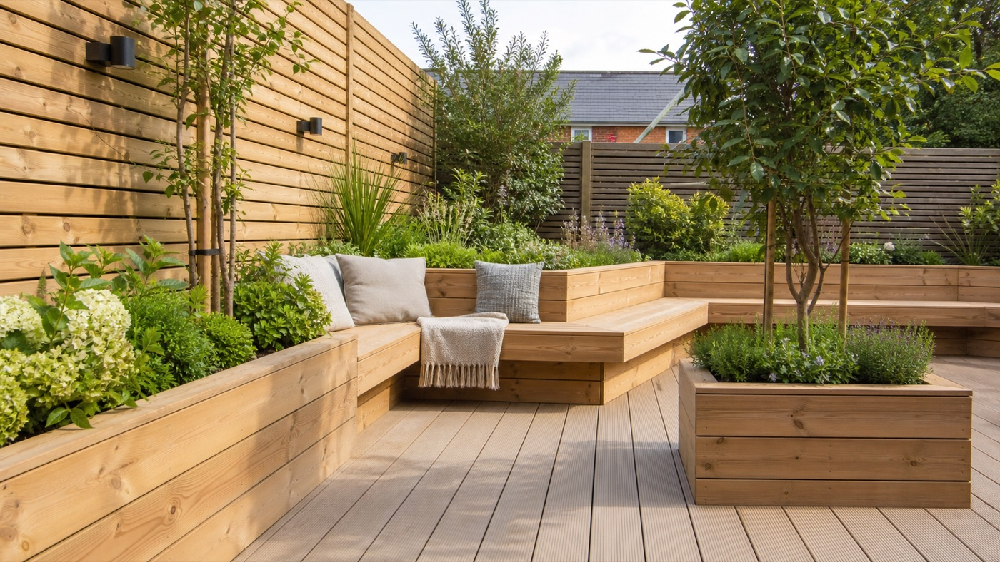
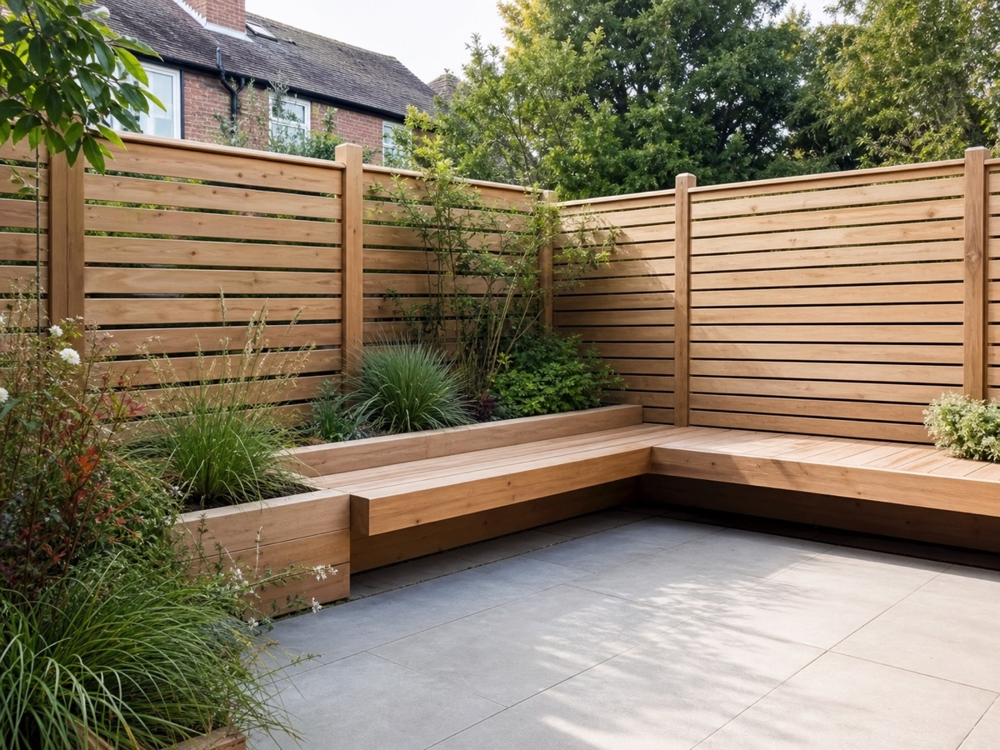
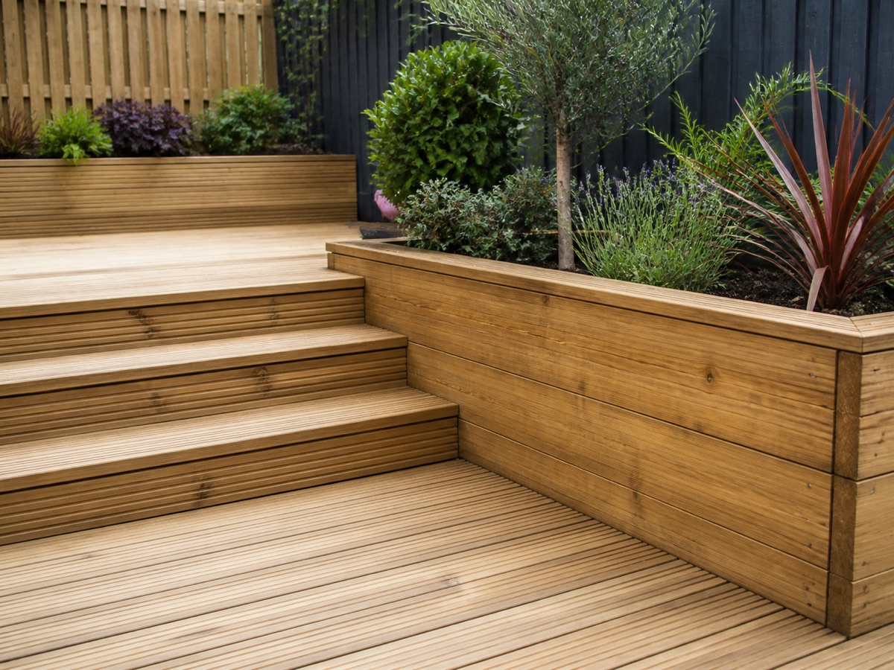
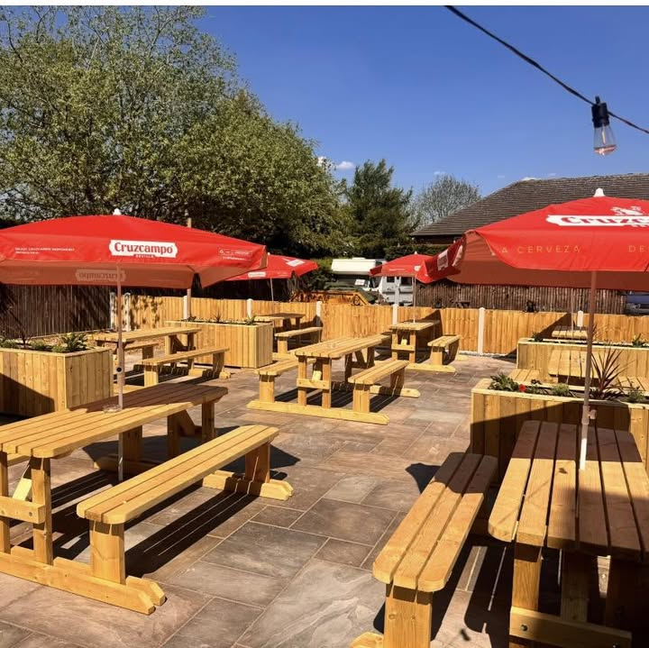

Garden timber work in Worksop
Timber work in Worksop for gardens, seating and outdoor spaces.
Practical outdoor timber features for homes and gardens: seating areas, planters, fencing-style details and usable patio spaces.

Outdoor timber services
Built for gardens that need seating, structure and better use of space.
A small garden can work much harder with the right timber layout: somewhere to sit, planting zones that feel deliberate, and details that make the space cleaner and easier to use.
S
Outdoor seating areas
Built-in timber benches and seating zones for patios, gardens and social spaces.
P
Planters and timber edges
Raised planters, timber borders and clean edges that make the layout feel finished.
G
Garden timber details
Privacy screens, fencing-style details and small timber features for everyday use.
What to ask for
Use the enquiry to talk about the space you want to improve.

Make a patio feel finished
Decking boards, raised planters and clean timber edges can turn a plain area into a usable garden space.

Add seating and privacy
Built-in benches and screening help create a more private place to sit, eat or spend time outside.

Plan around real use
Share photos of the garden and explain how you want to use it before asking for a quote.
Contact
Message Timber works about outdoor timber work in Worksop.
For quotes, availability or project questions, contact the business through Facebook and include photos of the garden or outdoor area.